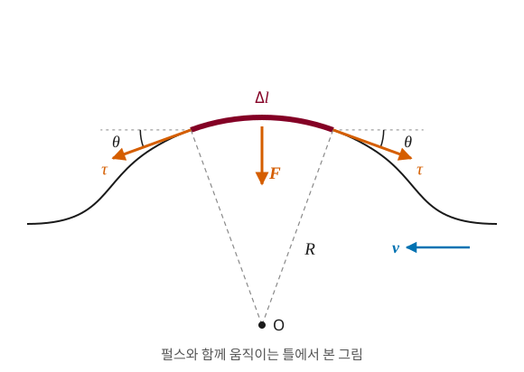

← 목차
줄의 파동 속력 (wave speed on a stretched string)
파동 속력은 매질의 성질로 정해진다. 줄에서는
장력 (tension)
와
선밀도 (linear density)
이 그 성질이다.
(16.2.5)
팽팽한 이상적인 줄의 파동 속력은 장력과 선밀도에만 달려 있고 파동의 진동수와는 상관없다.
진동수는 파동을 만드는 쪽이 정하고 파장은
(16.1.13)로 정해진다.
